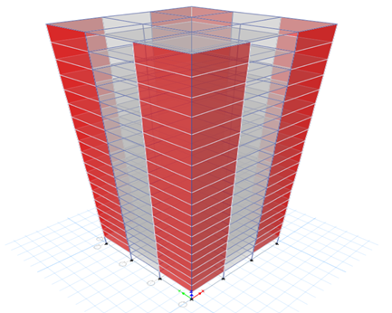
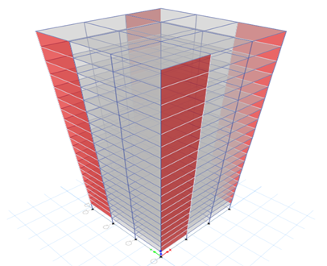
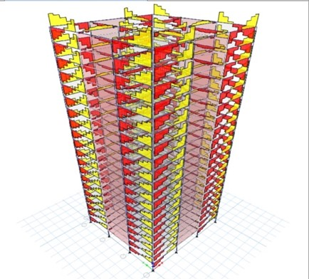
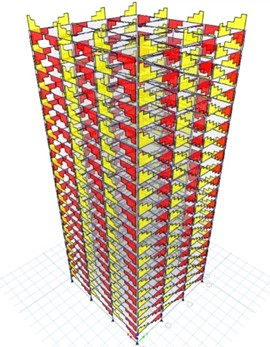
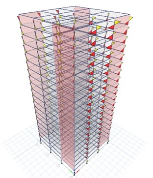
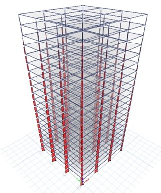

Project 1: STUDY ON LATERAL EFFECT OF BUILDING WITH AND WITHOUT SHEAR WALL USING ETABS
Project Description:To study on lateral effect of building with and without shear wall by using time history analysis in E-TABS.
Analysis of building using different type of shear wall at different locations in building.
Obtaining the Lateral displacement, Lateral stiffness, storey drift, base shear for different positions of shear wall for IV seismic zone with the help of E-TABS.
Screenshots:

3D view of the building with shear wall placed at corners (P-3)

3D view of the building with shear wall placed at periphery

Shear diagram of building without shearwall

Torsion diagram of building without shear wall

Moment diagram of building without shear wall

Axial force of building without shear wall
Area Of Work
Our project is related to RCC structural analysis.
This study is carried for the G+20 storey building plan with and without shear wall for RCC.
Shear walls are taken in different locations of the building. The building we considered is located at PATNA comes under Zone-IV.
The building is designed and analyzed by using E-TABS software.